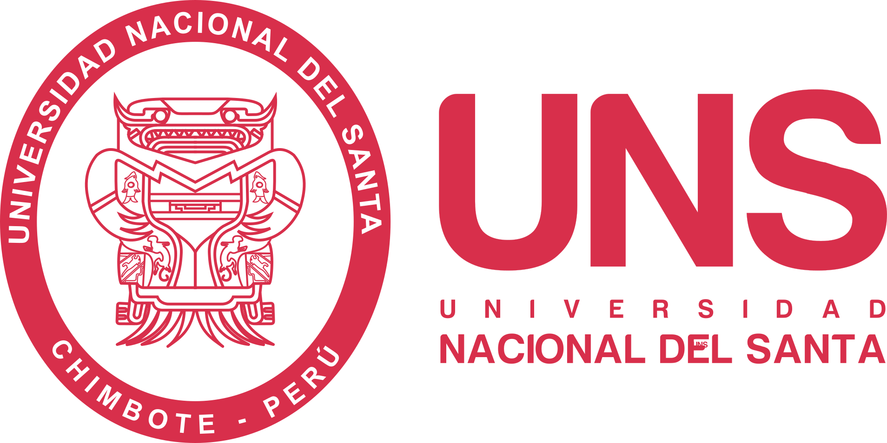

DIRECCIÓN DE EVALUACIÓN DE LA CALIDAD ACADÉMICA Y ACREDITACIÓN
Inicio
Calidad
DECAA
Oficinas
Mejora Continua
Acreditación
Cómites de calidad
Licenciamiento
Investigaciones
Publicaciones
Investigaciones de Docentes
Explora las investigaciones realizadas por los docentes de la Universidad Nacional del Santa
Escuela de Formación y Capacitación Profesional - EFCAP
[5]
Escuela de Post Grado
[471]
Evaluación
[2]
Facultad de Ciencias
[582]
Facultad de Educación y Humanidades
[809]
Facultad de Ingeniería
[1151]
Investigaciones de Docentes
[0]
Trabajo de suficiencia profesional
[0]